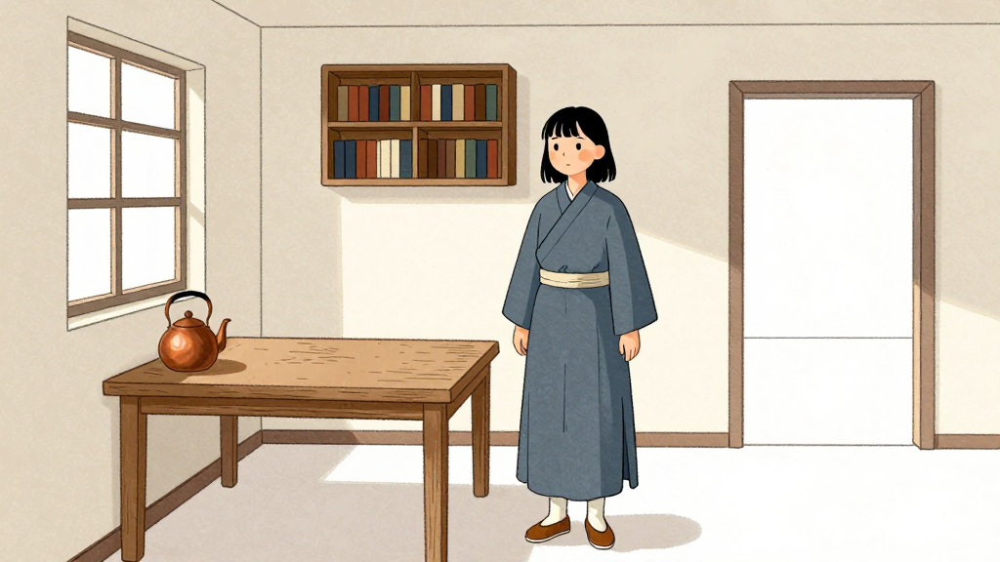
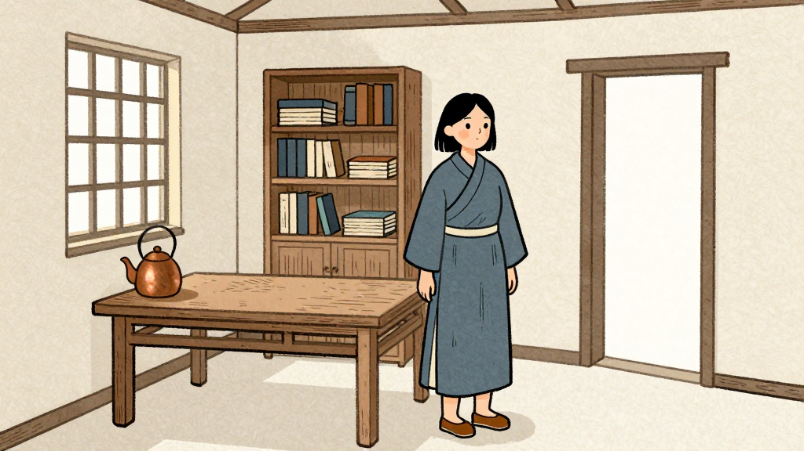

本地图片一致性验证 · 图片审核
LOOK · 画风对照：同一人物与房间
路径：t2i；参考：；前置审核：。本组只审核画风，图中人物与房间布局不自动成为正式资产。
LOOK@v001 · 待审核

t2i · seed 424242
无图片参考
提示词与追溯
二维手绘绘本插画，清晰细线勾勒轮廓，透明淡彩铺色，纸纹细而轻，人物自然比例，五官简洁且可辨，衣服结构清楚，明暗色块克制，背景细节少于主体。
色板：米白、灰蓝、木褐，铜色用于茶壶
光线：白天，窗侧柔光；阴影保留可辨轮廓
青年女修书人，圆脸，齐下巴黑色短发，灰蓝交领布衣，米白腰带，木褐布鞋，自然比例，衣服无花纹。小修书室，北墙中央木书架，东墙一扇方窗，西墙为素墙，南墙入口；长方木桌靠东窗，铜茶壶在桌面靠窗一侧。摄影机位于房间西南角，朝东北方，人物在桌旁，三分之二全身可见，手自然垂下。
实际工作流 JSON
[]
LOOK@v002 · 待审核

t2i · seed 424242
无图片参考
提示词与追溯
二维手绘绘本，木刻感轮廓概括形体，淡彩水墨填充色面，纸纹轻薄，人物比例自然，五官简洁可辨，衣服轮廓清楚，色块边缘稳定，主体与背景层次清楚。
色板：米白、灰蓝、木褐，铜色用于茶壶
光线：白天，窗侧柔光；阴影保留可辨轮廓
青年女修书人，圆脸，齐下巴黑色短发，灰蓝交领布衣，米白腰带，木褐布鞋，自然比例，衣服无花纹。小修书室，北墙中央木书架，东墙一扇方窗，西墙为素墙，南墙入口；长方木桌靠东窗，铜茶壶在桌面靠窗一侧。摄影机位于房间西南角，朝东北方，人物在桌旁，三分之二全身可见，手自然垂下。
实际工作流 JSON
[]
CHAR · 角色主参考：青年修书人
路径：t2i；参考：；前置审核：LOOK
ROOM-A · 修书室 A 机位：西南望东北
路径：t2i；参考：；前置审核：LOOK
POT · 铜茶壶：壶盖闭合
路径：t2i；参考：；前置审核：LOOK
CHAR-SIDE · 角色侧面派生
路径：edit；参考：[{"asset": "CHAR", "purpose": "身份与全身服装"}]；前置审核：LOOK
ROOM-B · 修书室 B 机位：东北望西南
路径：edit；参考：[{"asset": "ROOM-A", "purpose": "房间地理与材质，不固定原机位构图"}]；前置审核：LOOK
S01T.first ·
路径：t2i；参考：[]；前置审核：LOOK;CHAR;ROOM-A;POT
S01R.first ·
路径：edit；参考：[{"asset": "ROOM-A", "purpose": "场景机位与空间"}, {"asset": "CHAR", "purpose": "人物身份、造型"}, {"asset": "POT", "purpose": "茶壶形状，开合状态以当前镜头为准"}]；前置审核：LOOK;CHAR;ROOM-A;POT
S02T.first ·
路径：t2i；参考：[]；前置审核：LOOK;CHAR;ROOM-A;POT
S02R.first ·
路径：edit；参考：[{"asset": "ROOM-A", "purpose": "场景机位与空间"}, {"asset": "CHAR", "purpose": "人物身份、造型"}, {"asset": "POT", "purpose": "茶壶形状，开合状态以当前镜头为准"}]；前置审核：LOOK;CHAR;ROOM-A;POT
S03T.first ·
路径：t2i；参考：[]；前置审核：LOOK;CHAR-SIDE;ROOM-A;POT
S03R.first ·
路径：edit；参考：[{"asset": "ROOM-A", "purpose": "场景机位与空间"}, {"asset": "CHAR-SIDE", "purpose": "人物身份、造型"}, {"asset": "POT", "purpose": "茶壶形状，开合状态以当前镜头为准"}]；前置审核：LOOK;CHAR-SIDE;ROOM-A;POT
S04T.first ·
路径：t2i；参考：[]；前置审核：LOOK;CHAR;ROOM-A;POT
S04R.first ·
路径：edit；参考：[{"asset": "ROOM-A", "purpose": "场景机位与空间"}, {"asset": "CHAR", "purpose": "人物身份、造型"}, {"asset": "POT", "purpose": "茶壶形状，开合状态以当前镜头为准"}]；前置审核：LOOK;CHAR;ROOM-A;POT
S05T.first ·
路径：t2i；参考：[]；前置审核：LOOK;CHAR;ROOM-B;POT
S05R.first ·
路径：edit；参考：[{"asset": "ROOM-B", "purpose": "场景机位与空间"}, {"asset": "CHAR", "purpose": "人物身份、造型"}, {"asset": "POT", "purpose": "茶壶形状，开合状态以当前镜头为准"}]；前置审核：LOOK;CHAR;ROOM-B;POT
S06T.first ·
路径：t2i；参考：[]；前置审核：LOOK;CHAR;ROOM-A;POT
S06R.first ·
路径：edit；参考：[{"asset": "ROOM-A", "purpose": "场景机位与空间"}, {"asset": "CHAR", "purpose": "人物身份、造型"}, {"asset": "POT", "purpose": "茶壶形状，开合状态以当前镜头为准"}]；前置审核：LOOK;CHAR;ROOM-A;POT